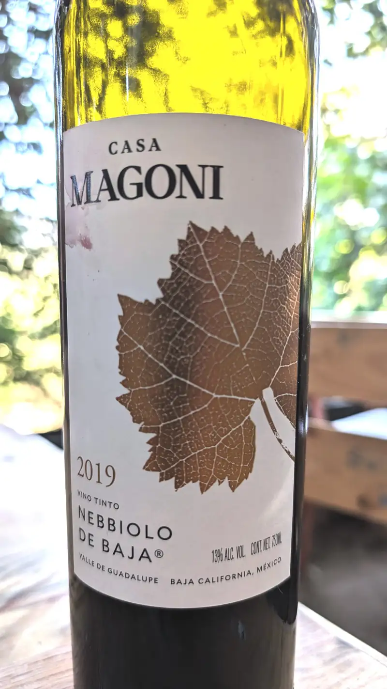
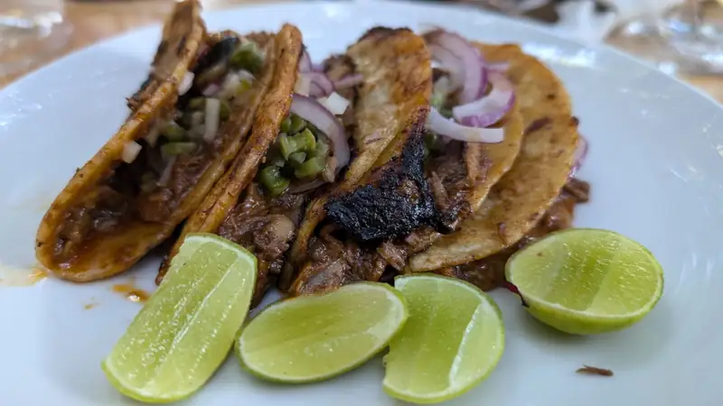
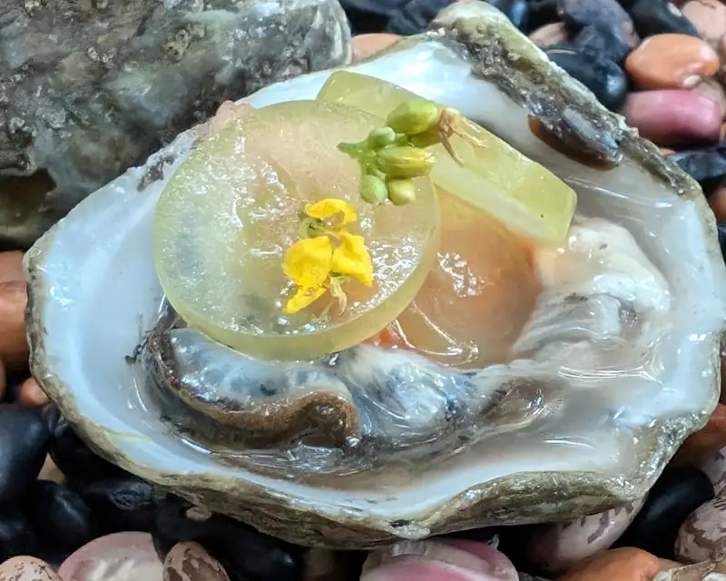
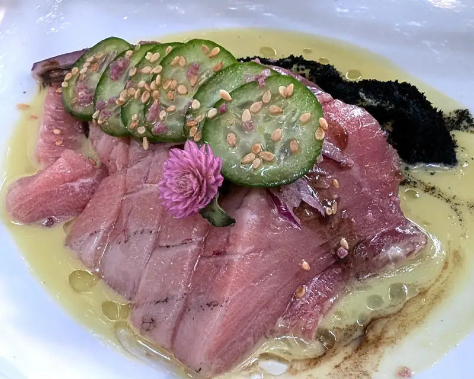
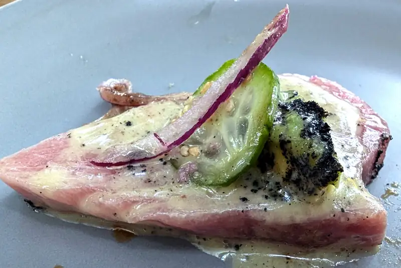
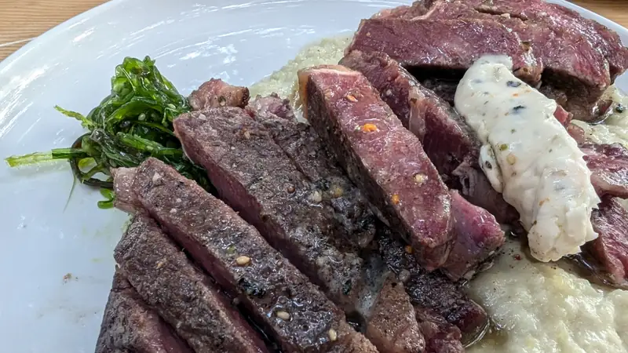
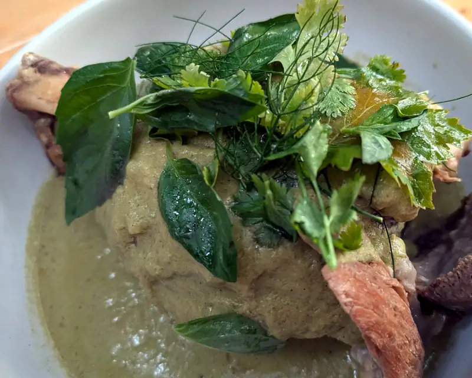
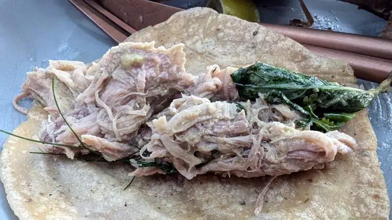
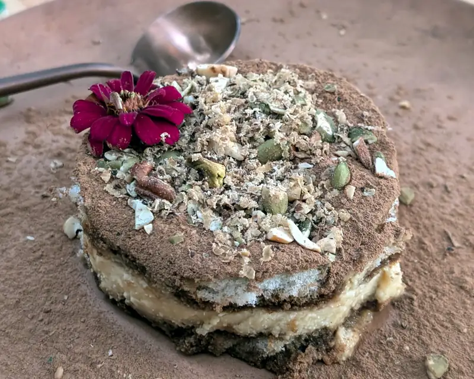

Restaurantes - Brocha
Las reglas de Carreño son claras: "si alguien pone negocio, vas y le compras" bueno, algo así, o si lo contratan de chef para un nuevo restaurante aplica lo mismo.. y no, no tengo ni puta idea si Carreño tenga una regla de esas, lo dudo bastante, de hecho :P.
Pero, lo que es cierto es que cuando algún amigo tuyo crea un nuevo menú para un restaurante, pues tieeeeneees que probar... y con más ganas si sabes que lo que cocina le sale bueno.
{kind=link}
Y aunque hubieramos querido pedir uno-de-cada-uno del menú --- pues simplemente no hay suficiente barriga para hacerlo. Aquí no hay fotos de las salsas, porque no ponen salsas en la mesa!! ... y sí, chiste para los papás: no hay chicken tenders!!!!
Per si hay vino, claro; no muy amplia la selección de vinos, pero si quieres descorche, te cobran 300 pesos. Escogimos uno bueno y conocido: Nebbiolo de Magoni.
 {kind=link}
Seguido rápidamente por unos tacos de birria de cabeza ahumada de atún aleta azul de la región.
 {kind=link}
Luego unos ostiones (en realidad, te sorprende? 1, 2, 3) aderezados con unas rebanadas de uva verde y unas ramitas de kimchi -- raro? sí bueno? absolutamente
 {kind=link}
Luego sashimi del mismo atún aleta azul que el chef deja orear con aïoli y una sala de habanero tatemado que no debería, pero me sorpendió lo bueno que estaban
 {kind=link}
Esa salsa tatemada tenía algo crunchy que le daba un buen juego de texturas no nadamás los sabores
 {kind=link}
Seguido de un ribeye, también oreado que sirve sobre puré de papas trufadas, con una ensalada de wakame y aderezado con una mantequilla compuesta con wasabi y furikake. La textura de la carne... tal como la esperas, suave y el término medio con apeeenas una costra externa que armoniza con el puré y la mantequilla de pocamadre y ya si quieres variarle de un bocado al otro, le pones poquita de la ensalada de wakame.
 {kind=link}
Y ya que estábamos con las proteínas/platos fuertes, un chamorro de puerco en pipián que aquí si me puedo quejar, obviamente no del sabor o la textura de la carne, porque eso estaba en su mero punto el pipián y la carne desbaratándose de tal manera que se pudo deshebrar fácilmente para compartir... no, la quja es por la escasa cantidad de tortillas que nos dieron, fue así como que pues.. con la pena, pero tuvimos que pedir más tortillas :( ... que pues, por la calaña del lugar, si como que da vergüenza pedir tortillas y no se diga preguntar si tendrán una salsita picosa por ahí, no, eso no pedimos 🙃
 {kind=link}
un taquito de la carne ya deshebrada
 {kind=link}
Y ya para cerrar un postre que al menos a mí me parece bastante original, un tiramisú, pero en vez de usar mascarpone, usa el primo mexicano requesón y para el café, en vez del tostado de espresso, con un café mexicano y toques de canela y cacao para mexicanizarlo aún más. Adornado con nueces y pistachos. No me gusta usar esa frase trillada, pero verdaderamente, un deleite para el paladar.
 {kind=link}